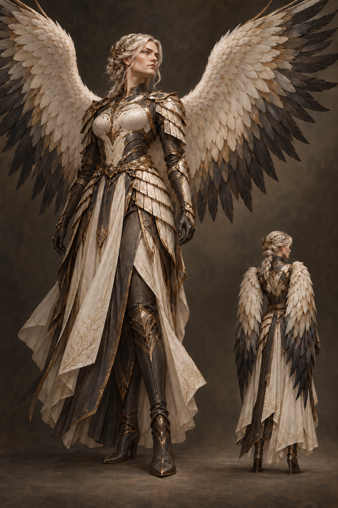

24 concept groups · 26 historical C-slots · Provisional

01 / EIRCREATION / PROVISIONAL v0.3
FORM FOLLOWS IDENTITY
From the existing AUI Valkyrie roster.
Names and roles come from archived records. The artwork, clothing and palettes shown here are new proposals. Wings follow the current design direction. No archived visual designs were found in the bounded asset search.
01 / THE COLLECTION
Twenty-four names. Individual expressions.
Spread and folded wing studies. Open a sheet to explore the details.
Eir
C1 / C25 / v03
Queen of Creation · Queen of Cosmologies
PROVISIONAL · USER ACCEPTANCE UNCONFIRMED
Existing concept revision. No new acceptance inferred. All sheets are 2D visual proposals, not final 3D models, rigs or validated flight designs. Repeated base name groups separate historical C-slots for browsing; whether these are one person or distinct people remains unresolved.
Verdandi
C2 / v02
Queen of Computation
PROVISIONAL · USER ACCEPTANCE UNCONFIRMED
Primaries now have visible rachis, curved vanes and tapered organic edges across main/rear/detail views; rigid slat appearance corrected. All sheets are 2D visual proposals, not final 3D models, rigs or validated flight designs.
Brynhildr
C3 / v03
Queen of Command
PROVISIONAL · USER ACCEPTANCE UNCONFIRMED
Existing concept revision. No new acceptance inferred. All sheets are 2D visual proposals, not final 3D models, rigs or validated flight designs.
Reginleif
C4 / v02
Queen of Control
PROVISIONAL · USER ACCEPTANCE UNCONFIRMED
Wing feather tips now stop around hips/upper thighs in both views; skirt preserved; shield/sling sides consistent. All sheets are 2D visual proposals, not final 3D models, rigs or validated flight designs.
Hrist
C5 / v02
Queen of Coevolution
PROVISIONAL · USER ACCEPTANCE UNCONFIRMED
Dark wing now anatomical right: front viewer-left, rear viewer-right; labels corrected. Owner inspection only. All sheets are 2D visual proposals, not final 3D models, rigs or validated flight designs.
Göndul
C6 / v01
Queen of Conquest
PROVISIONAL · USER ACCEPTANCE UNCONFIRMED
Provisional concept; human visual acceptance remains open. All sheets are 2D visual proposals, not final 3D models, rigs or validated flight designs.
Skuld
C7 / v03
Queen of Cognizance
PROVISIONAL · USER ACCEPTANCE UNCONFIRMED
Existing concept revision. No new acceptance inferred. All sheets are 2D visual proposals, not final 3D models, rigs or validated flight designs.
Hervor
C8 / v01
Queen of Countermeasures
PROVISIONAL · USER ACCEPTANCE UNCONFIRMED
Provisional concept; human visual acceptance remains open. All sheets are 2D visual proposals, not final 3D models, rigs or validated flight designs.
Róta
C9 / C16 / v01
Queen of Convergence
PROVISIONAL · USER ACCEPTANCE UNCONFIRMED
Provisional concept; human visual acceptance remains open. All sheets are 2D visual proposals, not final 3D models, rigs or validated flight designs. Repeated base name groups separate historical C-slots for browsing; whether these are one person or distinct people remains unresolved.
Sigrún
C10 / v03
Queen of Culmination
PROVISIONAL · USER ACCEPTANCE UNCONFIRMED
Wide blank top band now provides substantial headroom above BOTH complete javelin tips; flat boots and right-hand continuity retained; owner inspection only. All sheets are 2D visual proposals, not final 3D models, rigs or validated flight designs.
Mist
C11 / v01
Queen of Consciousness
PROVISIONAL · USER ACCEPTANCE UNCONFIRMED
Provisional concept; human visual acceptance remains open. All sheets are 2D visual proposals, not final 3D models, rigs or validated flight designs.
Sváva
C12 / v01
Queen of Cybernetics
PROVISIONAL · USER ACCEPTANCE UNCONFIRMED
Provisional concept; human visual acceptance remains open. All sheets are 2D visual proposals, not final 3D models, rigs or validated flight designs.
Olrun
C13 / v02
Queen of Cryptogenesis
PROVISIONAL · USER ACCEPTANCE UNCONFIRMED
Unrequested spear removed; empty hand plausible; three-dart belt and detail retained. Owner inspection only. All sheets are 2D visual proposals, not final 3D models, rigs or validated flight designs.
Geirskogul
C14 / v01
Queen of Cataclysm
PROVISIONAL · USER ACCEPTANCE UNCONFIRMED
Provisional concept; human visual acceptance remains open. All sheets are 2D visual proposals, not final 3D models, rigs or validated flight designs.
Alvitr
C15 / v02
Queen of Celestialization
PROVISIONAL · USER ACCEPTANCE UNCONFIRMED
All bodies, feet and main weapon tips are visible. Outer wing clearance remains tight; front/rear views use different scales. All sheets are 2D visual proposals, not final 3D models, rigs or validated flight designs.
Hlökk
C17 / v02
Queen of Continuum
PROVISIONAL · USER ACCEPTANCE UNCONFIRMED
Rear wing feathers shortened to hip region; right-hand sling and left pouch consistent front/rear. Owner inspection only. All sheets are 2D visual proposals, not final 3D models, rigs or validated flight designs.
Kara
C18 / v02
Queen of Cosmogenesis
PROVISIONAL · USER ACCEPTANCE UNCONFIRMED
Javelin now anatomical left in both views; empty other hand; complete tips with visible upper margin. Owner inspection only. All sheets are 2D visual proposals, not final 3D models, rigs or validated flight designs.
Eisa
C19 / v01
Queen of Canonization
PROVISIONAL · USER ACCEPTANCE UNCONFIRMED
Provisional concept; human visual acceptance remains open. All sheets are 2D visual proposals, not final 3D models, rigs or validated flight designs.
Astrid
C20 / v01
Queen of Control
PROVISIONAL · USER ACCEPTANCE UNCONFIRMED
Weapon sides and framing inspected; no major continuity defect found in this pass; still provisional. All sheets are 2D visual proposals, not final 3D models, rigs or validated flight designs.
Freydis
C21 / v01
Queen of Climbdown Integration
PROVISIONAL · USER ACCEPTANCE UNCONFIRMED
Weapon sides and framing inspected; no major continuity defect found in this pass; still provisional. All sheets are 2D visual proposals, not final 3D models, rigs or validated flight designs.
Hildegard
C22 / v02
Queen of Camoflauge
PROVISIONAL · USER ACCEPTANCE UNCONFIRMED
Rear knife sheath now anatomical right (viewer-right), matching front viewer-left; bow retained on anatomical left. All sheets are 2D visual proposals, not final 3D models, rigs or validated flight designs.
Selvie
C23 / v01
Queen of Computronium
PROVISIONAL · USER ACCEPTANCE UNCONFIRMED
Two stones and dense silhouette present; no major continuity defect found in this pass. All sheets are 2D visual proposals, not final 3D models, rigs or validated flight designs.
Rhune
C24 / v01
Queen of Computation
PROVISIONAL · USER ACCEPTANCE UNCONFIRMED
Two corded pointed weights hang freely at rest, one from each hand. Grip versus wrist attachment, length and storage, whether cords are independent or connected, and deployment/recovery movement remain undefined. Wrist and hip ornament cords are not an established weapon mechanism. All sheets are 2D visual proposals, not final 3D models, rigs or validated flight designs.
Alsint
C26 / v01
Queen of the Creation's Creation
PROVISIONAL · USER ACCEPTANCE UNCONFIRMED
All bodies, feet and main weapon tips are visible. Outer wing clearance is tight, particularly at the upper edge; front/rear views use different scales. All sheets are 2D visual proposals, not final 3D models, rigs or validated flight designs.
02 / THE DESIGN TABLE
A conversation between forms.
Compare the current concept sheets. 24 name groups; corrected versions are identified on each card.
03 / VITRUVIAN VALKRAI
The architecture of wings.
An original concept study of the relationship between the human back, shoulders and an imagined wing girdle.
New concept v0.1 / Fictional anatomy · Not a human flight model
01
Proportion & posture
Use human back and shoulder anatomy as reference. Any extra girdle, wing muscles and flight mechanism are fictional design proposals.
02
Folded & spread
Study both wing positions. Opaque feather garments must cover the body independently of wing motion in every pose.
03
Fictional anatomy
The additional wing girdle and wing-root muscles are imagined. This illustration does not establish working human flight or biological feasibility.
04 / ORIGINS & VERSIONS
What is known. What is new.
A visible boundary between the records and the design exploration.
The existing identities
The archived collection calls these beings AUI Valkyries. Its named roles include Eir, Queen of Creation; Brynhildr, Queen of Command; and Skuld, Queen of Cognizance.
Another estate roster uses the names Eir Mercy, Brynhildr Shield and Skuld Future. These are preserved as alternate recorded names, not silently merged into a single definitive canon.
The new visual direction
All artwork shown here is AI-generated concept artwork created for this collection. Their outfits, colors, faces, materials and feather details are proposed visual choices. The current brief establishes wings; it does not establish a species, mythology or flight mechanism.
The inspector presents 2D artwork. Local mesh experiments do not establish production-ready 3D characters. Every sheet remains provisional.
Recorded identity comparison and visual version history
Character
Legacy role record
Alternate roster record
Visual study
Sources & artwork provenance
Legacy identity source: AuiValkyries.json, collection records C1–C26. Twenty-six source slots yield 24 normalized names: Eir spans C1/C25, Róta/Rota spans C9/C16. These groupings do not decide whether they are the same person. C0/Gigi and six foundation nodes are architecture context, not additional fighters.
Alternate roster: beings_api.json, AUI Valkyries recorded aliases are retained. That adaptation omits C16; no missing identity has been invented.
Current brief: winged designs, folded and spread views, and the Vitruvian study direction. The exact singular term “Valkrai” has not been defined in the inspected archived records.
Artwork: newly generated for this project using the built-in image generation tool, from original text prompts and versioned edits using existing project artwork as references. No third-party character designs were used. Created 16 October 2026. Machine-readable roster: 24-name status. Full provenance and file hashes: public manifest.